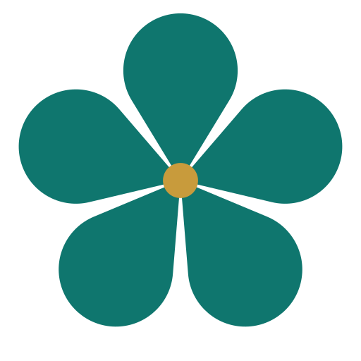

About
Sāgarasaṅgama
सागर
सङ्गमः
A virtual meeting of oceans for
large Sanskrit e-text collections
(
texts)
Sanskrit Wikisource Atlas
.org

Sanskrit Documents Atlas
.org
E-bhāratīsampat Atlas
.in
Jain Quantum Atlas
.org
GRETIL Atlas
.de
Search